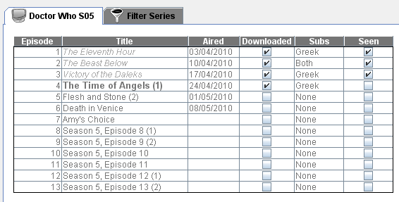

| The Episodes Panel |
|---|
|  |
The episodes panel consists of a table with 6 columns:
To edit an episode just click on a cell and it will be converted to edit mode. If you have given the local directory in [Add/Edit Series Panel] then the application search the series directory and updates the downloaded and subtitles info. Also the episodes that are downloaded , have subtitles and are not seen yet are shown in bold. Right clicking on an episode will bring up the [Episodes pop up menu]. |